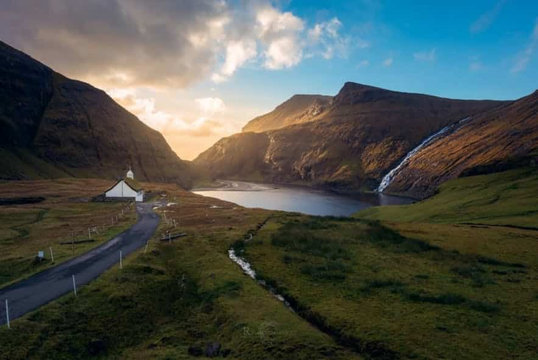
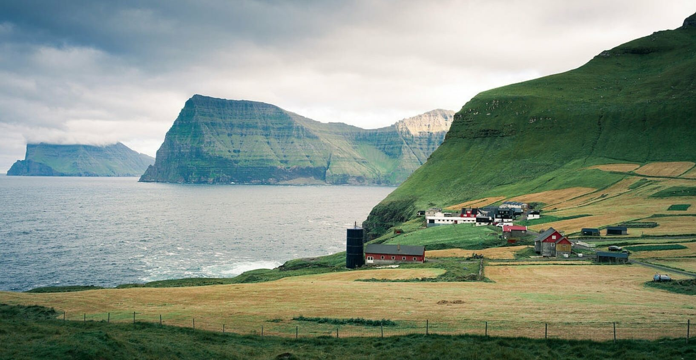

Saksun
Saksun is a remote little village on Streymoy Island with lovely turf houses surrounded
by stunning waterfalls along the mountain sides.
Address
6QWR+F52, Saksun 436, Islas Feroe
What people enjoy about Saksun
At low tide, locals love to visit the tiny village to walk along the shore from the lagoon and to the beachfront.
There is a hiking opportunity from Saksun to the nearby village Tjørnuvík. The hike is done along the old mountain
trail between Dúvugarðar and Tjørnuvík. There are cairns along the route to guide you.
Learn More

Trøllanes
Trøllanes is the most visited village on Kalsoy Island in the wild Faroe Islands.
Address
95CP+3M7, Kalsoy, Faroe Islands, Trøllanes, Islas Feroe
What people enjoy about Trøllanes
People go to Trøllanes for the adventurous hike to Kallur Lighthouse.
All those wanting to explore the majestic landscapes surrounding the lighthouse
will eventually set off from the village Trøllanes.
Learn More

Sørvágsvatn
Address
What people enjoy about
At low tide, locals love to visit the tiny village to walk along the shore from the lagoon and to the beachfront.
There is a hiking opportunity from Saksun to the nearby village Tjørnuvík. The hike is done along the old mountain
trail between Dúvugarðar and Tjørnuvík. There are cairns along the route to guide you.
Learn More